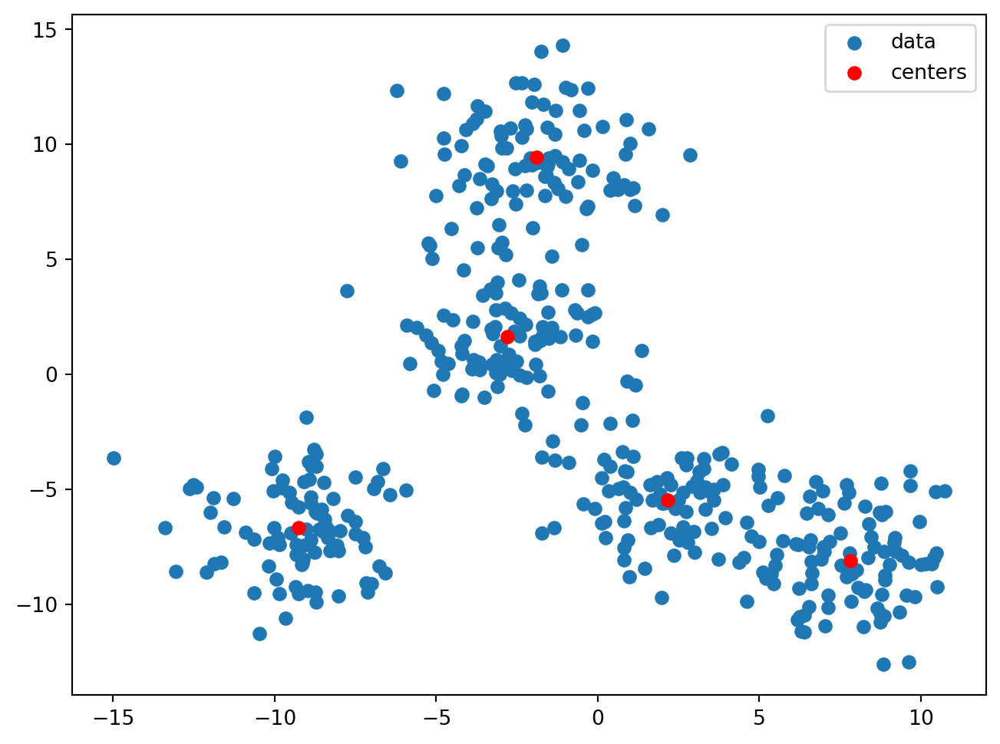

#importing necessary packages
from sklearn.mixture import GaussianMixture
from sklearn.datasets import make_blobs
from sklearn.preprocessing import StandardScaler
import matplotlib.pyplot as plt
import pandas as pd
import numpy as np
from numpy import random
from urllib.request import urlopen
from bs4 import BeautifulSoup
import seaborn as sns
from sklearn.metrics import silhouette_score, silhouette_samples
from sklearn.decomposition import PCA
import requestsExpectation Maximization
The Expectation Maximization (E-M) Algorithm is an iterative approach to find maximum likelihood estimates for latent variables (since the things we want to maximize are only indirectly available). It is comprised of an estimation step, which tries to estimate the unknown variables, and a maximization step, which then tries to optimize the parameters of the model to better explain the data.
The unknown parameters are sometimes written as \(\phi\) or \(\Theta\), and we can call the latent, “nuisance,” variables \(J\), and the observed data \(U\). So, from above, the process can be roughly seen as \[ \Theta^* = \operatorname*{argmax}_{\Theta} \sum_{J\in\mathcal{J}^n} P(\Theta, J|U) \] Since this shows us maximizing the posterior probability of parameters \(\Theta\) given our data and we are summing over \(J\) in order to marginalize out our latent variables (Dellaert, 2002).
This process was first rigorously defined on the exponential family, where the probability density functions take the form \[ f(x|\phi) = b(x)\exp(\phi t(x)^T/a(\phi))\]
where \(\phi\) is a \(1\times r\) parameter vector and \(t(x)\) is a \(1\times r\) vector of sufficient statistics for the data. Our “natural parameter” for these exponential distributions is given by some \(r\times r\) linear transformation.
To run the algorithm on this example, we first enter the expectation step, and take \(t^{(p)}=E[t(x)|y,\phi^{(p)}]\) with the \((p)\) denoting the \(p^{th}\) cycle of the algorithm, trying to estimate the vector of sufficient statistics for the exponential distribution.
The maximization step, is then taking the equation \(E[t(x)|y,\phi^{(p)}]=t^{(p)}\) and we call the solution to this equation \(\phi^{(p+1)}\). We then plug in \(\phi^{(p+1)}\) to the expectation step and keep iterating.
This looks nice, and seems like it could work, but if you are anything like me, you might wonder how we decide when to stop. Possibly the coolest part of this algorithm is that it actually converges to a local maximum every time (Dempster et al. 1976). Since it always converges to a local maximum, it means that if we “guess” a decent parameter space to start off the algorithm, we will converge to what is likely to be a very solid set of estimates.
In Dempster, Laird, and Rubin’s seminal paper Maximum Likelihood via the ‘EM’ Algorithm, they enumerate the process detailed above, proved the convergence, and later on, proposed that E-M could be used to in finite clusters. This foreshadowed the most common usage of the algorithm, clustering, or more specifically, dividing unlabeled data into nice clusters. For example, if we know that our raw data is comprised of unique groups represented by different probability distributions, we can use the E-M algorithm to change the parameters for the estimated distributions of these groups to maximize the probability that the data belongs to the proposed clustering.
Gaussian Mixture Modeling
One of the most common usages of expectation maximization, and specifically clustering, is Gaussian Mixture Modeling (GMM) (Hasselblad 1966). This process is essentially assuming that each group you are trying to sort out is represented by a normal distribution. This is often a very convenient technique to use because things often actually do follow normal distributions because of the central limit theorem (everyone’s favorite statistics theorem) and because once we have clusters that are normal, it is much easier to do inference on the clusters and talk about them with people who don’t know as much about statistics because gaussian distributions are so well understood.
GMMs are used to observe clusters everywhere. They are used to create customer archetypes in retail, to better understand the different ways people shop, they are used in medical scenarios in order to identify types of tumors for cancer detection. From this little sample of use cases, it is pretty obvious that this is a really powerful (and pretty cool) use for a powerful algorithm.
Example Code
To show how effective this algorithm can be, I am going to make a set of five blobs of data, each with a center, and then I will show how accurately the algorithm can cluster the data into the blobs that created the underlying data.
#set a random seed so that we actually get clusters that kind of look like separate clusters
random.seed(195)
x, _ = make_blobs(n_samples=450, centers=5, cluster_std=1.84)
plt.figure(figsize=(8, 6))
plt.scatter(x[:,0], x[:,1])
plt.show() 
Now I’m going to fit the algorithm with the prior understanding that the data is made of five clusters of approximately normal data.
{'covariance_type': 'full',
'init_params': 'kmeans',
'max_iter': 100,
'means_init': None,
'n_components': 5,
'n_init': 1,
'precisions_init': None,
'random_state': None,
'reg_covar': 1e-06,
'tol': 0.001,
'verbose': 0,
'verbose_interval': 10,
'warm_start': False,
'weights_init': None}This code here fits the model and lets it learn from the data, in the next plot, I will plot the centers that the data came up with, and then on the plot after that I will plot the boundaries for the clusters that the algorithm came up with.
centers = gm.means_
plt.figure(figsize=(8, 6))
plt.scatter(x[:,0], x[:,1], label="data")
plt.scatter(centers[:,0], centers[:,1],c='r', label="centers")
plt.legend()
plt.show() 
pred = gm.predict(x)
df = pd.DataFrame({'x':x[:,0], 'y':x[:,1], 'label':pred})
groups = df.groupby('label')
ig, ax = plt.subplots()
for name, group in groups:
ax.scatter(group.x, group.y, label=name)
ax.legend()
plt.show() 
The accuracy is really fantastic. It plots the centers exactly where I would have, and then is able to pick which dots it belongs to which groups with great accuracy.
Now if we consider a dataset with millions of points and possibly hundreds or thousands of dimensions, this allows for very sensitive anomaly detection for genetic disorders by clustering genes or proteins it helps us see just how helpful this could be.
The NBA
Basketball as a sport is changing. Players like Stephen Curry have changed perceptions around what a point guard is supposed to do, Nikola Jokic is reinventing the center position, and some teams are playing with centers who are shorter than 6’5. Another even bigger change is the advent of extremely tall players playing seemingly positionless basketball, the trend started by players such as Kevin Durant and Kristaps Porzingis, and continued by younger players like Chet Holmgren and Victor Wembanyama.
People are playing basketball differently. To effectively understand the game, the old labels of point guard, shooting guard, center, power forward, and small forward don’t seem to suffice, which means that we want to find new labels for positions in order to regroup players.
This seems to be a problem uniquely well suited to clustering. I plan on looking at a few things, how the clusters of players in the modern NBA compare to the positions that players are assigned to. Secondly, I am curious if the NBA has become more specialized, i.e. if there are more than five positions, and players are acquired and used for more specific purposes than in the past. To answer these questions, even just a little bit, I plan on clustering players from the 2022 season (stats acquired from Basketball Reference) and answering my first question using that data and model, and then taking in data from the 1986 season (that was fun and long enough ago to measure change) and looking at the difference in number of clusters for those seasons.
urls = ['https://www.basketball-reference.com/leagues/NBA_2022_per_game.html', 'https://www.basketball-reference.com/leagues/NBA_2023_per_game.html', 'https://www.basketball-reference.com/leagues/NBA_2021_per_game.html', 'https://www.basketball-reference.com/leagues/NBA_2019_per_game.html', 'https://www.basketball-reference.com/leagues/NBA_2018_per_game.html', 'https://www.basketball-reference.com/leagues/NBA_2017_per_game.html', 'https://www.basketball-reference.com/leagues/NBA_2016_per_game.html']
def scrape_basketball_data(url):
html = urlopen(url)
org_html = BeautifulSoup(html)
org_html.findAll('tr', limit=2)
headers = [th.getText() for th in org_html.findAll('tr', limit=2)[0].findAll('th')]
headers = headers[1:]
rows = org_html.findAll('tr')[1:]
player_stats = [[td.getText() for td in rows[i].findAll('td')] for i in range(len(rows))]
data = pd.DataFrame(player_stats, columns = headers)
return data
def aggregate_data_from_urls(urls):
all_dataframes = []
for url in urls:
df = scrape_basketball_data(url)
all_dataframes.append(df)
combined_data = pd.concat(all_dataframes, ignore_index=True)
combined_data = combined_data.apply(pd.to_numeric, errors='ignore')
aggregated_data = combined_data.groupby('Player', as_index=False).mean()
return aggregated_data
df = aggregate_data_from_urls(urls)
df = df[df['MP']>=10]
df/var/folders/6_/c68mr5wx1xz8wp1g177rf99r0000gn/T/ipykernel_21839/1310375822.py:25: FutureWarning:
The default value of numeric_only in DataFrameGroupBy.mean is deprecated. In a future version, numeric_only will default to False. Either specify numeric_only or select only columns which should be valid for the function.
| Player | Age | G | GS | MP | FG | FGA | FG% | 3P | 3PA | ... | FT% | ORB | DRB | TRB | AST | STL | BLK | TOV | PF | PTS | |
|---|---|---|---|---|---|---|---|---|---|---|---|---|---|---|---|---|---|---|---|---|---|
| 3 | AJ Griffin | 19.000000 | 72.000000 | 12.000000 | 19.500000 | 3.400000 | 7.400000 | 0.465000 | 1.400000 | 3.600000 | ... | 0.894000 | 0.500000 | 1.600000 | 2.100000 | 1.000000 | 0.600000 | 0.200000 | 0.600000 | 1.200000 | 8.900000 |
| 4 | Aaron Brooks | 32.000000 | 55.333333 | 0.333333 | 11.933333 | 1.833333 | 4.533333 | 0.403333 | 0.666667 | 1.900000 | ... | 0.764333 | 0.266667 | 0.766667 | 1.033333 | 1.700000 | 0.333333 | 0.066667 | 0.833333 | 1.400000 | 4.800000 |
| 5 | Aaron Gordon | 23.777778 | 59.666667 | 54.111111 | 29.355556 | 5.200000 | 10.966667 | 0.477111 | 1.200000 | 3.555556 | ... | 0.683556 | 1.711111 | 4.544444 | 6.266667 | 2.733333 | 0.744444 | 0.688889 | 1.644444 | 1.955556 | 13.777778 |
| 6 | Aaron Harrison | 22.000000 | 11.666667 | 1.000000 | 11.233333 | 0.766667 | 3.133333 | 0.179333 | 0.366667 | 1.900000 | ... | 0.560667 | 0.200000 | 1.100000 | 1.333333 | 0.633333 | 0.433333 | 0.066667 | 0.166667 | 1.300000 | 2.600000 |
| 8 | Aaron Holiday | 24.500000 | 50.833333 | 7.333333 | 15.466667 | 2.216667 | 5.250000 | 0.422333 | 0.733333 | 1.916667 | ... | 0.848333 | 0.333333 | 1.316667 | 1.633333 | 2.116667 | 0.633333 | 0.166667 | 0.966667 | 1.433333 | 6.033333 |
| ... | ... | ... | ... | ... | ... | ... | ... | ... | ... | ... | ... | ... | ... | ... | ... | ... | ... | ... | ... | ... | ... |
| 1218 | Zhaire Smith | 19.000000 | 6.000000 | 2.000000 | 18.500000 | 2.300000 | 5.700000 | 0.412000 | 1.000000 | 2.700000 | ... | 0.750000 | 0.500000 | 1.700000 | 2.200000 | 1.700000 | 0.300000 | 0.300000 | 1.000000 | 1.300000 | 6.700000 |
| 1220 | Ziaire Williams | 20.500000 | 49.500000 | 17.500000 | 18.450000 | 2.700000 | 6.050000 | 0.439500 | 0.950000 | 3.250000 | ... | 0.777500 | 0.400000 | 1.700000 | 2.100000 | 0.950000 | 0.500000 | 0.200000 | 0.850000 | 1.700000 | 6.900000 |
| 1221 | Zion Williamson | 21.000000 | 45.000000 | 45.000000 | 33.100000 | 10.100000 | 16.600000 | 0.609500 | 0.200000 | 0.650000 | ... | 0.706000 | 2.350000 | 4.750000 | 7.100000 | 4.150000 | 1.000000 | 0.600000 | 3.050000 | 2.200000 | 26.500000 |
| 1223 | Álex Abrines | 24.000000 | 58.000000 | 5.333333 | 16.533333 | 1.766667 | 4.666667 | 0.381667 | 1.266667 | 3.533333 | ... | 0.889667 | 0.266667 | 1.200000 | 1.433333 | 0.533333 | 0.500000 | 0.133333 | 0.433333 | 1.700000 | 5.333333 |
| 1225 | Ömer Aşık | 30.400000 | 27.000000 | 16.600000 | 13.360000 | 0.800000 | 1.760000 | 0.438000 | 0.000000 | 0.000000 | ... | 0.355200 | 0.960000 | 2.840000 | 3.820000 | 0.300000 | 0.200000 | 0.280000 | 0.660000 | 1.400000 | 2.040000 |
905 rows × 27 columns
There are a few instances of the same player showing multiple times in the dataframe since people were traded and played for different teams throughout the season, so I took the averages of all of their values to create a set of stats for the season for them.
df=df.drop(columns=['Age', 'G', 'GS', '2P', '3P', 'TRB', 'FT','PF', 'FG', 'MP'], axis=1)So now that we have this data, I will take all of the features besides position, age, team, games played, games started (As well as some irrelevant features, i.e. those that are just linear combinations of other features) and will use them to create clusters so we can start to draw some conclusions. We should feel pretty good about modeling the clusters as gaussian since there are over eight hundred players that played in 2022 which means we should feel alright about assuming normality across each predictor, especially since we have data across 6 seasons.
n_components = np.arange(1, 15)
models = [GaussianMixture(n, covariance_type='full', random_state=0).fit(X)
for n in n_components]
plt.plot(n_components, [m.bic(X) for m in models], label='BIC')
plt.plot(n_components, [m.aic(X) for m in models], label='AIC')
plt.legend(loc='best')
plt.xlabel('n_components');This code here, uses metrics Bayesian Information Criterion (BIC) and Aikake Information Criterion (AIC), to see which number of clusters would best tell us about the data. The lower the value the better. Both of the metrics are based on the likelihood function for the potential mixture models and the main difference between them is that BIC punishes models with more parameters more than AIC, as we can see from the plot, since the BIC is minimized between 4 and 5 and AIC continues to decrease as the number of components reaches 50. The AIC is equal to \(2k-2\ln(L)\) and the BIC is equal to \(k\ln(n)-2\ln(L)\) where \(k\) is the number of parameters. So as the likelihood that the model proposed (dependent on the number of clusters) has a higher likelihood of explaining the data, the AIC and BIC both decrease.
This graph essentially says that the model that explains the data the best without overfitting is between 4 and 5 clusters, since that is where BIC is at a minimum.
model = GaussianMixture(n_components=4, random_state=0).fit(X)preds = pd.Series(model.predict(X))
X["Cluster"] = preds
X.dropna()| FGA | FG% | 3PA | 3P% | 2PA | 2P% | eFG% | FTA | FT% | ORB | DRB | AST | STL | BLK | TOV | PTS | Cluster | |
|---|---|---|---|---|---|---|---|---|---|---|---|---|---|---|---|---|---|
| 3 | 7.400000 | 0.465000 | 3.600000 | 0.390000 | 3.800000 | 0.536000 | 0.560000 | 0.700000 | 0.894000 | 0.500000 | 1.600000 | 1.000000 | 0.600000 | 0.200000 | 0.600000 | 8.900000 | 3.0 |
| 4 | 4.533333 | 0.403333 | 1.900000 | 0.362333 | 2.633333 | 0.433667 | 0.480000 | 0.600000 | 0.764333 | 0.266667 | 0.766667 | 1.700000 | 0.333333 | 0.066667 | 0.833333 | 4.800000 | 0.0 |
| 5 | 10.966667 | 0.477111 | 3.555556 | 0.325222 | 7.422222 | 0.544667 | 0.529222 | 3.222222 | 0.683556 | 1.711111 | 4.544444 | 2.733333 | 0.744444 | 0.688889 | 1.644444 | 13.777778 | 1.0 |
| 6 | 3.133333 | 0.179333 | 1.900000 | 0.169667 | 1.233333 | 0.202333 | 0.227667 | 0.966667 | 0.560667 | 0.200000 | 1.100000 | 0.633333 | 0.433333 | 0.066667 | 0.166667 | 2.600000 | 3.0 |
| 8 | 5.250000 | 0.422333 | 1.916667 | 0.380333 | 3.316667 | 0.448000 | 0.491833 | 1.050000 | 0.848333 | 0.333333 | 1.316667 | 2.116667 | 0.633333 | 0.166667 | 0.966667 | 6.033333 | 3.0 |
| ... | ... | ... | ... | ... | ... | ... | ... | ... | ... | ... | ... | ... | ... | ... | ... | ... | ... |
| 867 | 7.400000 | 0.437000 | 2.500000 | 0.353000 | 4.900000 | 0.480000 | 0.497000 | 1.000000 | 0.905000 | 0.100000 | 1.600000 | 2.400000 | 0.300000 | 0.100000 | 1.400000 | 8.200000 | 1.0 |
| 868 | 10.050000 | 0.435000 | 2.650000 | 0.314000 | 7.400000 | 0.477500 | 0.476000 | 2.100000 | 0.756500 | 0.400000 | 2.650000 | 3.950000 | 1.500000 | 0.450000 | 2.150000 | 11.150000 | 3.0 |
| 869 | 7.480000 | 0.521000 | 2.700000 | 0.314400 | 4.800000 | 0.590600 | 0.578600 | 1.120000 | 0.859400 | 0.280000 | 2.020000 | 3.760000 | 0.800000 | 0.140000 | 0.720000 | 9.360000 | 0.0 |
| 870 | 6.844444 | 0.633444 | 0.133333 | 0.107111 | 6.711111 | 0.644222 | 0.635000 | 3.222222 | 0.661556 | 1.711111 | 3.033333 | 1.366667 | 0.466667 | 0.655556 | 0.933333 | 10.888889 | 3.0 |
| 871 | 5.328571 | 0.438429 | 2.314286 | 0.326143 | 3.014286 | 0.522286 | 0.508571 | 1.942857 | 0.777286 | 0.671429 | 2.657143 | 1.100000 | 0.442857 | 0.328571 | 1.000000 | 7.214286 | 2.0 |
621 rows × 17 columns
Y = X.drop('Cluster', axis = 1)
cluster_assignments = model.predict(Y)
# Get the cluster centers from the fitted model
cluster_centers = model.means_ # This will give the centers of each cluster
# Calculate distances between each player and the cluster centers
distances_to_centers = np.linalg.norm(Y - cluster_centers[cluster_assignments], axis=1)
# Find the indices of players closest to each cluster center
closest_players_indices = np.argmin(distances_to_centers, axis=0)
# Get the details of players closest to each cluster center
closest_players = Y.iloc[closest_players_indices]X_numeric = X.select_dtypes(include='number')
# Scale the numeric columns
scaler = StandardScaler()
X_scaled = scaler.fit_transform(X_numeric)
# Convert back to DataFrame (keeping the column names)
X_scaled_df = pd.DataFrame(X_scaled, columns=X_numeric.columns)
# Add the cluster assignments to your scaled data
X_scaled_df['Cluster'] = cluster_assignments
# Melt the DataFrame to create a long-form dataset for violin plot
melted_data_scaled = X_scaled_df.melt(id_vars='Cluster', var_name='Statistic', value_name='Value')
# Plotting separate violin plots for each statistic
g = sns.FacetGrid(melted_data_scaled, col='Statistic', col_wrap=3, height=4)
g.map(sns.violinplot, 'Cluster', 'Value', palette='Set3')
g.set_xticklabels(rotation=45)
g.set_titles('{col_name}')
plt.tight_layout()
plt.show()/Users/abeporschet/anaconda3/lib/python3.11/site-packages/seaborn/axisgrid.py:712: UserWarning:
Using the violinplot function without specifying `order` is likely to produce an incorrect plot.